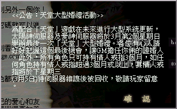
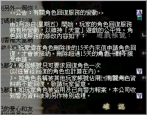

2003年2月28日 台灣伺服器2月28日更新內容原文：台灣天堂官方網站公告 <系統更新公告>
親愛的玩家您好:2/28(五)中午維護後，寵物系統修正為無法使用變杖將寵物變身 換句話來說，修正了狗隻洗血的漏洞。
45級職業任務流程及獎勵 來源：Lineage Playforum(騎士)，Lineage Playforum(妖精)，Lineage Playforum(法師)
日文翻譯：Lineage Report
英文翻譯：Lineage Compendium 法師45級任務
1. 到象牙塔3樓找NPC塔拉斯開始任務。
2. 將伊娃的祝福交給變型怪後，並將之殺死，可以取得變型怪血液。
3. 到海音的鏡子森林(33783,33278)找尋像高侖石頭人的奇跡岩石，並和它對話。
4. 將變型怪的血液及魔法書(魔法相消術)交給奇跡岩石，可以得到古代的惡魔記錄。
5. 將古代的惡魔記錄交給象牙塔3樓的塔拉斯，可以得到瑪那斗蓬。
裝備了古代的長袍(+12)及瑪那斗蓬(+?)，使用藍色藥水(精18 +8)、冥想術(+5)及水晶魔杖(+10)後，再加上本身基本回復量(18精 +3)，每下(15秒)可以回55MP，因此瑪那斗蓬可能可以加15至25魔力回復量，視乎那位測試角色的精神值及有否站在旅館。 | 法師45級任務相關道具 | | 圖片 | 中文名稱 | Name | 重量 | 材質 | 說明 | | 變型怪血液 | Blood of Doppelganger | | 玻璃 | 將伊娃的祝福交給變型怪後，並將之殺死，可以取得變型怪血液 | | 古代的惡魔記錄 | Scroll About Ancient Evil | | 紙 | 用變型怪血液與奇跡岩石交換 | | 瑪那斗蓬 | Cloak of Mana | 10 | 布 | 防禦-2，加強魔力回復量，法師專用 |
妖精45級任務
1. 到威頓村找NPC馬沙開始任務。
2. 到亞丁城堡北方的NPC希托對話，他們要求你尋找藍色苗子。
3. 到龍谷洞3層找NPC沙比亞(Sefia)並和他對話。
4. 她會傳送你往一個像地獄或龍谷7層的地方，找尋沙比亞之罪並將之擊倒，便可以得到藍色苗子。
5. 將藍色苗子交給亞丁城堡北方的NPC希托，使可以得到神秘的貝殼。
6. 到冰鏡湖西方的魔法陣，使用神秘的貝殼，古代亡靈(白色的希爾黛斯)會出現。
7. 單挑擊倒古代亡靈後，便可以得到古代亡靈之袋（古代人的智慧？）。
8. 打開古代亡靈之袋可以得到古代鑰匙及古代豎琴。
9. 將古代豎琴鑑定後會變為古代之弓。
10. 和威頓村的NPC馬沙對話，可以得到馬沙之袋。
11. 打開馬沙之袋，可以得到精靈水晶(召喚強力元素精靈)及保護者手套。
古代之弓及古代鑰匙的功用還是一個謎，而保護者手套的安定值好像是4，除了+20HP外還有+10MP的效果。 | 妖精45級任務相關道具 | | 圖片 | 中文名稱 | Name | 重量 | 材質 | 說明 |  | 藍色苗子 | Blue Flute | | | 可從沙比亞之罪身上得到 | | 神秘的貝殼 | Mysterious Shell | | | 用藍色苗子與希托交換 | | 古代亡靈之袋 | Ancient Spirit Treasure | | | 可從古代亡靈身上得到，打開後可以得到古代鑰匙及古代豎琴 | | 古代鑰匙 | Ancient Key | 3 | 鐵 | | | 古代豎琴/古代之弓 | Ancient Harp/Ancient Bow | | | 將古代豎琴鑑定後會變為古代之弓 | | 馬沙之袋 | Masha's
Treasure | | | 打開後可以得到精靈水晶(召喚強力元素精靈)及保護者手套 | | 精靈水晶(召喚強力元素精靈) | Spirit Crystal
(Summon Elemental) | 5 | 寶石 | 可學會召喚強力元素精靈魔法，必須等級50 | | 保護者手套 | Gloves of Protection | 10 | 皮 | 防禦-0，體力上限+20，魔力上限+10，安定值4，妖精專用 |
騎士45級任務
1. 到威頓村找NPC馬沙開始任務。
2. 到黃昏山賊找NPC巨人長老，然後在奇岩地區擊倒山賊，便有機會得到夜之視野。
3. 裝備夜之視野後，便可以看到巨人守護者，單挑擊倒他後便可以得到守護者之袋，打開守護者之袋後可以得到破舊的調查員調查書，古代的遺產及天上之劍。
4. 將古代的遺產交給巨人長老便可以得到古代鑰匙。
5. 接著你要找巨人調查員，他會在傲慢之塔廢墟出現，你要帶同妖精或法師同伴去相消他，他會變為像塔拉斯一樣的老人。
6. 調查員會要求你護送他回歐瑞村，他會由傲慢之塔廢墟一路跟著你回到歐瑞水店西邊的守衛，然後他會給你調查員的報告。
7. 將任務道具交給馬沙，便可以得到勇氣皮帶。 | 騎士45級任務相關道具 | | 圖片 | 中文名稱 | Name | 重量 | 材質 | 說明 | | 夜之視野 | Night View | | | 可從奇岩地區的山賊身上得到 | | 守護者之袋 | Guardian Treasure | | | 可從巨人守護者身上得到，打開後可以得到破舊的調查員調查書，古代的遺產及天上之劍 | | 破舊的調查員調查書 | Old Investigator's Report | | | | | 古代的遺產 | Ancient Relic | | | | | 天上之劍 | Sword of Sky | | | | | 古代鑰匙 | Ancient Key (Head Part) | | | 用古代的遺產與巨人長老交換 | | 調查員調查書缺頁 | Investigator's Report | | | | | 勇氣皮帶 | Belt of Courage | 50 | 皮 | 防禦-1，體力上限+30，騎士專用 |
各職業獎勵如下：
妖精：保護者手套，防禦0，重10，皮製，體力上限+20，魔力上限+10，妖精專用，安定值4
精靈水晶(召喚強力元素精靈)，50級才可以學。
騎士：勇氣皮帶，防禦1，重50，皮製，體力上限+30，騎士專用
法師：瑪那斗蓬，防禦2，重10，布製，加強魔力回復量，法師專用，在文中提及裝備了古代的長袍(+12)及瑪那斗蓬(+?)，使用藍色藥水(精18 +8)、冥想術(+5)及水晶魔杖(+10)後，每下大約可以回55MP，因此瑪那斗蓬可能可以加15至25魔力回復量，視乎那位測試角色的精神值及有否站在旅館。
香港伺服器 - 最後一次大型婚禮活動 
香港伺服器 - 角色回復服務的變動  由於近幾個月有不少玩家將故意將自己的角色刪除，然後在另一帳號建立相同的角色名稱，其後向遊戲管理員訛稱帳號被盜，角色遭到刪除，要求遊戲管理員回復角色，但由於角色名稱已被使用，因此遊戲管理員唯有用另一角色名稱回復該角色，而玩家們便達到改名換姓的目的。因於太多玩家濫用此方法改名，所以官方修改了有關回復角色的服務。 |